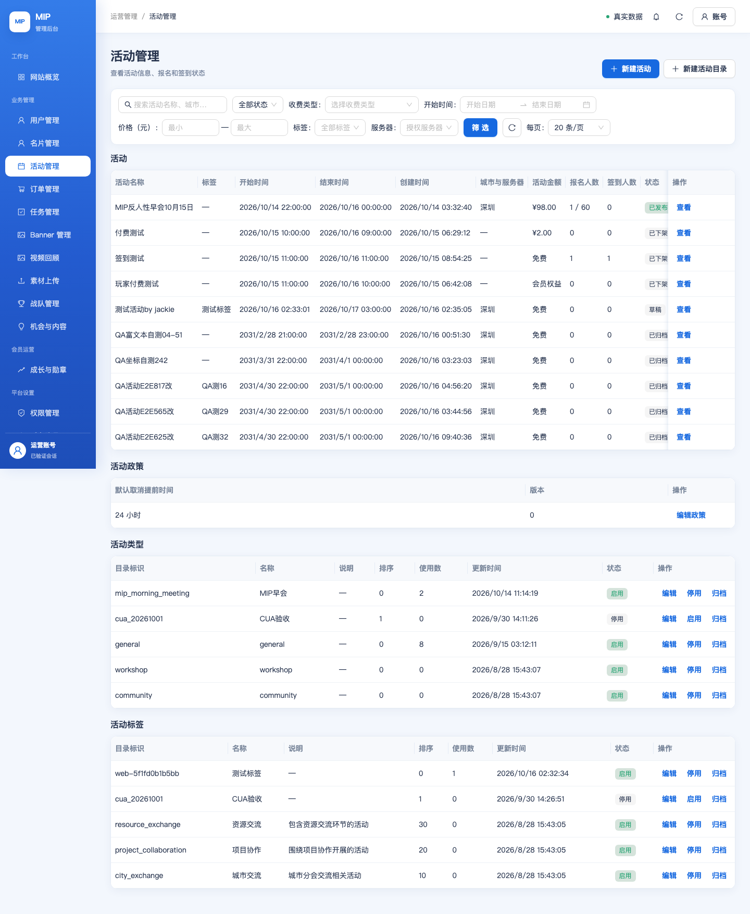
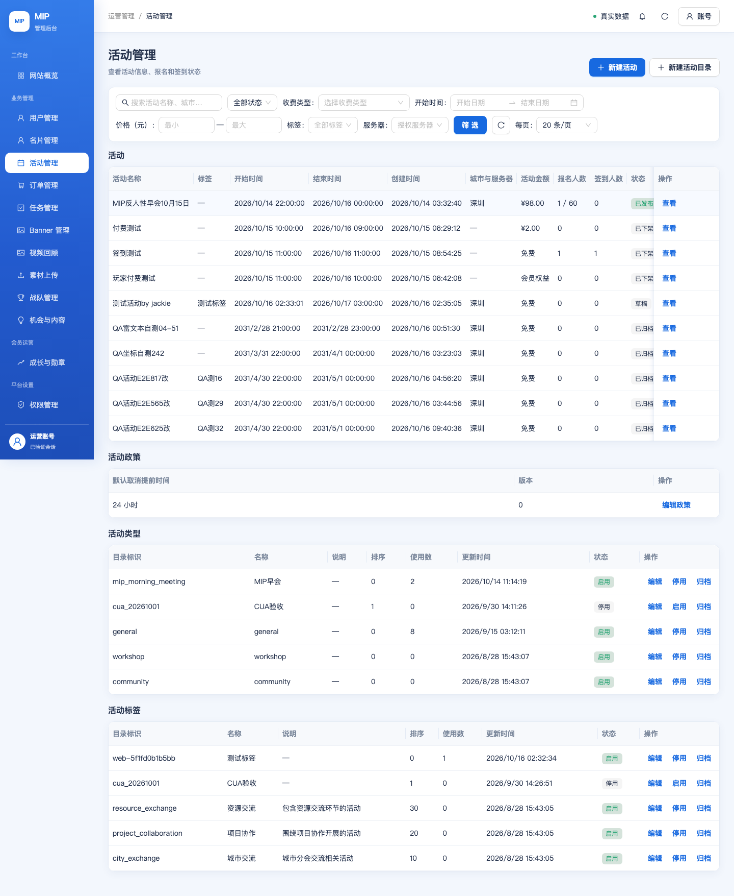
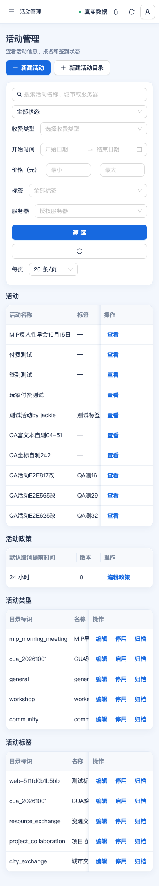

MIP 活动模块 W05 + 浏览器 UI 自动化 · 阶段报告
2026-10-16 · 范围：活动模块联动（E06–E09 审计/修复）、退款入口、L2/L3 自动化，并统一整合两个并行 AI 的工作与双环境分离。
1. 一句话结论
本轮修掉活动链路里 4 个“看得见但会失败/误判”的真实缺陷，建立了可重复的 L2 已部署 API E2E 与 L3 Playwright 浏览器 E2E；同时把两条并行工作线（测试环境分离/证书续期、Cloudflare 清理）与本地分叉一并整合进 main。双环境门禁全绿，测试后台已部署本轮构建并通过资产字节校验；测试后台登录闭环仍 BLOCKED（缺测试管理员账号）。
2. 本轮交付与验证
| 项 | 结果 | 证据 |
|---|---|---|
本地门禁 pnpm verify | PASS | 712 owned sources / 300 test files；architecture、lint、docs:check 全过 |
云函数回归 mip-admin-api | 765/765 | 含新增退款入口投影回归（签到阻断 / 超管例外） |
Web 门禁 pnpm admin:web:verify | PASS | 28 test files / 182 React tests + build + responsive |
L2 已部署 API E2E · 生产 admin.mip.cool | 12/12 | scripts/qa/admin-event-e2e.mjs |
| L3 浏览器 UI E2E · 生产 | 5/5 | 登录/列表/详情/390 无溢出/console 无错 + 截图 |
L3 浏览器 UI E2E · 测试 test.admin.mip.cool | 5/5 | 同上；测试管理员账号 18819253403 已可登录 |
| L2 API E2E · 测试 | 11/12 | 唯一失败＝测试后端函数 mip-t-admin-api 落后于生产（缺 ≤20 字标题/地点校验），非前端缺陷 |
测试后台部署（test.admin.mip.cool） | VERIFIED | BFF mip-t-admin-web-api；静态前缀 mip-admin-console-test/ 15 文件字节匹配；入口 index-DF4g-W8w.js |
| 真机项（扫码签到、支付、小程序） | NOT RUN | 需真机/体验版 |
3. 修复明细（含“为什么”）
| 缺陷 | 现象 | 修复 |
|---|---|---|
| 退款入口不认识签到状态 | 已签到活动的已支付订单，非超管仍看到「提交退款」，点了必然被事务拒绝（EVENT_REFUND_CHECKIN_ACTIVE） | 入口投影改为与退款事务同口径：非超管 + 生效签到 → 不给入口，改为返回 blockedRefundActions 原因；界面显示禁用按钮并给出原因 |
| 反馈合同缺失会整页报错 | 反馈响应非空但缺 displayFields 时抛错，整个活动抽屉变错误页 | 降级占位 + 区块提示，不再拖垮整页（“可选请求失败不得让已成功正文变整页错误”） |
| 签到码按钮能力不一致 | 动作投影按 events.write 暴露签到码，实际动作要求 events.checkin.manage → 看得见但会失败 | 投影改为 events.checkin.manage，与动作自身校验一致 |
| 签到码刷新不吊销旧码 | 仅 ROTATING 吊销旧码；STATIC 反复下发会同时存在多个有效码 | 同模式重新下发时吊销旧的有效码 |
全量名单泄漏 userId | rosterAll 返回原始 userId，与 roster 脱敏不一致 | 移除 userId，与单场名单口径一致 |
4. 你走查用：本轮改动页面
| 页面 / 区域 | 改动 | 怎么看 |
|---|---|---|
| 活动列表 → 活动详情抽屉 ·「报名与参与人」 | 新增「来源」（用户报名/运营补录）、「角色标记」两列 | 打开任一活动，看名单表头 |
| 活动详情抽屉 ·「活动反馈明细」 | 字段缺失时降级为占位并在区块顶部提示，不再整页报错 | 正常数据下应无提示；异常数据不再白屏 |
| 活动详情抽屉 ·「参与情况」 | 统计读取失败时显示“统计数据加载失败，请重试”，而非静默显示 — | 断网/接口失败时可见 |
| 订单详情 · 动作栏 | 已签到活动的非超管：不再有「提交退款」，改为禁用按钮 + 原因文案 | 找一笔已签到活动订单查看 |
| 活动创建/编辑表单 | 「地图坐标」字段整块隐藏（代码保留，客户有需求再启用） | 表单里不再出现坐标/拾取器 |
5. 截图（L3 浏览器 E2E，生产入口）



6. 并行工作整合（两条 AI 线 + 本地分叉）
- 测试/生产环境分离 + 证书续期：
envs/{prod,test}目标目录、MIP_ENV_DIR加载器、ops.mjs --target编排、release:prod/release:trial通道；证书续期参数化支持test.admin.mip.cool（测试专用函数/角色/前缀）。 - Cloudflare 清理：删除
wrangler*.toml、public/_headers、旧迁移脚本与deploy:pages/wrangler 依赖；文档统一为 CloudBase 同构口径；守卫常量CLOUDFLARE_*→LEGACY_HOSTING_*。 - 本地分叉收敛：本地
main与origin/main分叉（本地 12 / 远端 10），仅PROJECT_STATUS.md冲突，已保留两侧条目合并；随后合入 Cloudflare 清理分支（pnpm-lock.yaml冲突以重建 lock 解决）。合并后修复 3 处门禁回归（环境文档父路径链接、部署脚本 eslint）。 - 汇总分支提交：
ff1a3d8e（merge origin/main）→80bba8e2（merge Cloudflare 清理）→a00d6486（门禁修复）。
7. 我需要你做的（两件事）
① 测试后台业务函数需同步到生产版本：测试管理员账号
18819253403 已可登录；测试后台的 admin-web 层（BFF mip-t-admin-web-api + 静态资产）已部署，L3 5/5 通过。但业务函数 mip-t-admin-api 落后于生产（L2 唯一失败项＝≤20 字标题/地点校验）。同步它需要测试库连接串 MIP_DB_CONNECTION_URI（本机 envs/test/.env.secrets.local 缺失）。请提供该连接串，或授权/执行 node scripts/ops.mjs --target=test 把测试函数集更新到当前版本。② 推送：本次提交完成后我会把本地
main 推送到 origin/main（按你的指示）。8. 怎么验证（你走查 + 自动化命令）
- 你走查：见第 4 节改动页面清单，按顺序点开活动详情 / 订单详情即可。
- 自动化（每次部署后我跑，也可你手动跑）：
node scripts/qa/admin-event-e2e.mjs --origin=https://admin.mip.cool（L2，已部署 API 端到端）node scripts/qa/admin-ui-e2e.mjs --origin=https://admin.mip.cool（L3，浏览器 UI + 截图）- 切换环境：命令前加
MIP_ENV_DIR=envs/test即指向测试后台。
- 本地门禁：
TZ=Asia/Shanghai pnpm verify:all（本轮：mip-admin-api 765 例、root 712 源/300 文件、admin-web 182 例，全绿）。
9. 我还没做完的（剩余工作清单，按优先级）
| 项 | 现状 | 为什么还没做 |
|---|---|---|
| E06 名单「支付状态 / 签到状态」筛选 | 服务端目前仅支持 query + 报名状态 + 时间区间；界面只有一个「状态」下拉 | 需要新的多条件筛选 UI（pager 现只支持单状态下拉），改动面涉及类型/抽屉/loader/路由与测试，需单独一轮 |
| E06 名单导出跟随支付/签到筛选 | 导出已跟随 query/status | 依赖上一条筛选先落地 |
| E08 补签（人工签到）原因 | 撤销签到有原因；人工签到无原因输入（审计仅服务端） | 需 服务端 + 动作契约（requiredInputKeys/optionalInputKeys）+ 生成契约 + 表单 联动，属契约级改动 |
| E09 统计下钻（名单/心动明细） | 已修「统计失败不再静默」；但指标卡不能点进明细 | mip.admin.events.hearts.list / rosterAll 目前无前端消费，需新交互 |
| E09 访问/分享指标 | 服务端已如实标注 NOT_TRACKED | 需埋点，属产品级缺口 |
| E09 比率口径（Q-ADMIN-04） | 签到率/提交率有硬编码分母 | 等业务口径确认 |
| 真机项 | 未跑 | 扫码签到、支付、小程序体验版需真机/体验版，单列不混入本结论 |
10. 环境与仓库状态
| 对象 | 状态 |
|---|---|
生产 admin.mip.cool | 本轮构建上线（index-DF4g-W8w.js），L2 12/12、L3 5/5 |
测试 test.admin.mip.cool | 本轮构建已部署，静态 15 文件字节 VERIFIED；登录 BLOCKED |
| 仓库 | 本地分叉已收敛；两条并行 AI 工作线（环境分离+证书续期、Cloudflare 清理）已合入；提交并推送 origin/main |
| 未纳入本结论 | 原生 Invoke 健康探针 CAM 拒绝（历轮同噪音）；生产数据清洗（等 Douglas 确认） |